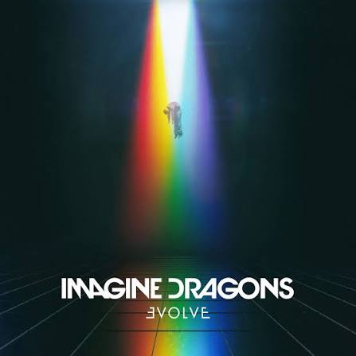

First things first
I'ma say all the words inside my head
I'm fired up and tired of the way that things have been, oh ooh
The way that things have been, oh ooh
Second things second
Don't you tell me what you think that I could be
I'm the one at the sail, I'm the master of my sea, oh ooh
The master of my sea, oh ooh
I was broken from a young age
Taking my sulking to the masses
Writing my poems for the few
That look at me, took to me, shook to me, feeling me
Singing from heartache from the pain
Taking my message from the veins
Speaking my lesson from the brain